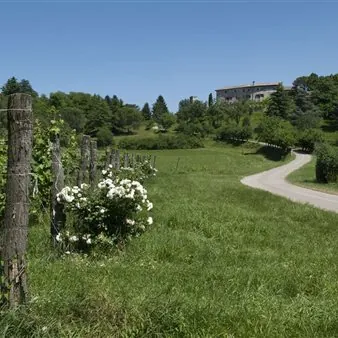

sab 3 ott · dalle 08:30
Escursione in bicicletta in occasione dell'evento Buon compleanno Invito a Pranzo
Escursione in bicicletta in occasione dell'evento Buon compleanno Invito a Pranzo Sabato 3 ottobre 2026, ore 8:30 - Fagagna, Via Lisignana, 22
 Indicazioni
Indicazioni
- Costi e prenotazioni
- Costo non indicato · Prenotazione non indicata
- Programma
- Programma da verificare. Apri la fonte ufficiale per orari e possibili aggiornamenti.
- In caso di maltempo
- Nessuna indicazione specifica pubblicata.
- Note
- Acquisito automaticamente dalla fonte.
L’EVENTO
Descrizione completa
In occasione dell'evento “Buon compleanno" degli amici dell'Associazione Invito a Pranzo nelle Valli del Natisone, quest’anno ci spostiamo a Fagagna per una piacevole escursione in bicicletta alla scoperta delle colline moreniche friulane, tra natura, storia, cultura e sapori del territorio.
Partiremo da Cjase Cocel – Museo della vita contadina e pedaleremo tra strade di campagna e sterrati alla scoperta di alcuni luoghi caratteristici della zona:
Oasi naturalistica dei Quadris
Forte Col Roncon
Castello di Arcano Superiore
Mulino Nicli
Torrente Corno e le sue rogge
Un percorso facile e adatto anche a chi vuole trascorrere una mattinata in bicicletta senza affrontare particolari difficoltà, con diverse soste lungo il percorso.
Al rientro a Cjase Cocel ci aspetteranno gli amici di Invito a Pranzo nelle Valli del Natisone con i loro piatti e i vini di ottime cantine friulane.
IL PERCORSO
Circa 25 km
150 m di dislivello positivo
Difficoltà: facile
Adatto anche a ragazzi/e dai 12 anni in su
Percorribile con e-bike (preferibile) o bicicletta muscolare
Durata: circa 3 ore e 30 minuti, comprese le soste
Il percorso si sviluppa su strade asfaltate e strade sterrate prive di particolari difficoltà tecniche. È comunque richiesta una minima abilità nella conduzione della bicicletta.
PROGRAMMA
08:30 – Ritrovo presso Cjase Cocel
Via Lisignana 22 – Fagagna (UD)
Iscrizioni e briefing
09:00 – Partenza dell'escursione
12:30 circa – Rientro a Cjase Cocel
COSA PORTARE
Casco obbligatorio
Acqua al seguito
Abbigliamento adatto alla stagione, preferibilmente a strati
Eventuale equipaggiamento antipioggia
Possibilità di noleggio gratuito del casco, previa prenotazione.
COSTI
I partecipanti al giro cicloturistico potranno usufruire di uno sconto sul costo del pranzo (25€ gli adulti e 15€ per i ragazzi, invece che 30€).
I dettagli dell'evento Invito a pranzo li trovate al seguente link:
https://www.nediskedoline.it/.../buon-compleanno-invito.../
E-BIKE
Puoi partecipare con la tua e-bike oppure noleggiarne una al costo di 35 €.
Il noleggio deve essere prenotato entro giovedì 1° ottobre.
Guida: Paolo Dreossi – Guida Cicloturistica Sportiva FCI e Maestro di MTB della Regione Friuli Venezia Giulia, affiliato alla Condotta Slow Food del Friuli.
METEO
La conferma dell'escursione o l'eventuale rinvio per condizioni meteorologiche sfavorevoli verranno comunicati entro le 48 ore precedenti la partenza.
Una mattinata in bicicletta tra natura, storia e cultura, con un finale dedicato ai sapori delle Valli del Natisone!
Ti aspettiamo!
IL PROGRAMMA
Programma e orari
Appuntamenti raccolti dalle fonti elencate. Dove manca un orario, non è ancora disponibile in questa scheda.
Programma pubblicato
- 08:30 – Ritrovo presso Cjase Cocel
- 09:00 – Partenza dell'escursione
- 12:30 circa – Rientro a Cjase Cocel
INFORMAZIONI UTILI
Prima di partire
- Controllare la fonte prima di partire.
ORGANIZZAZIONE